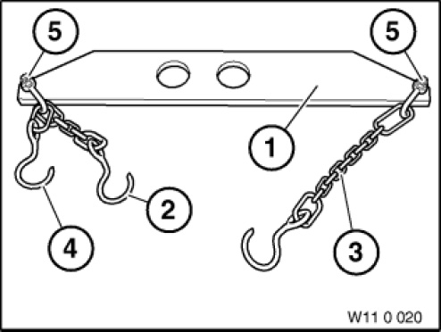

11 0 020 Lifting Gear
11 0 020 Lifting Gear
0490567
Minimum set: Mechanical tools
MW

NOTE: For removing and installing engines. 08/2011 only available as a complete set. Delivered with TUV inspection certificate and operating instructions. No delivery of separate parts. [Released]
SI number: 01 13 94 (888)
Consisting of:
1 = 0490568 Lifting gear
NOTE: (Cross member) As of 08/2011, only available as a complete set via 11 0 020 = 0490567. Delivered with TUV inspection certificate and operating instructions. [Blocked]
2 = 0490569 Chain
NOTE: (Chain) As of 08/2011, only available as a complete set via 11 0 020 = 0490567. Delivered with TUV inspection certificate and operating instructions. [Blocked]
3 = 0490570 Chain
NOTE: (Chain) Version: long As of 08/2011, only available as a complete set via 11 0 020 = 0490567. Delivered with TUV inspection certificate and operating instructions. [Blocked]
4 = 0490571 Chain
NOTE: (Chain) Version: short As of 08/2011, only available as a complete set via 11 0 020 = 0490567. Delivered with TUV inspection certificate and operating instructions. [Blocked]
5 = 0490572 Shackle
NOTE: (Shackle) 2 pieces As of 08/2011, only available as a complete set via 11 0 020 = 0490567. Delivered with TUV inspection certificate and operating instructions. [Blocked]